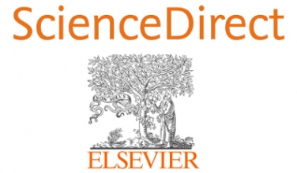

Databases
EBSCOhost provides subscription databases for scholarly journals covering multiple subjects. Contact the Library for Log-in Details

Science Direct offers access to open access scientific journals and books across various disciplines.
African Journals Online (AJOL) is an online service providing access to African-published research, increasing worldwide knowledge of African indigenous scholarship.
JSTOR currently offers more than 12 million academic journal articles, 85,000 books, and 2 million primary source documents in 75 disciplines.
SpringerOpen offers researchers from all areas of science, technology, medicine, the humanities and social sciences a place to access and publish open access in journals and books.
arXiv provides e-prints in the fields of physics, mathematics, computer science, quantitative biology, quantitative finance, statistics, electrical engineering and systems science, and economics.
Directory of Open Access Journals (DOAJ) contains thousands of open access journals covering all areas of science, technology, medicine, social science and humanities.
Access to Global Online Research in Agriculture (AGORA) provides a collection of up to 14,500 key journals and up to 27,000 books in more than 115 countries, designed to enhance scholarship in agriculture and life sciences.
CORE
CORE is the world's largest collection of open access research papers, providing free access to millions of research papers.